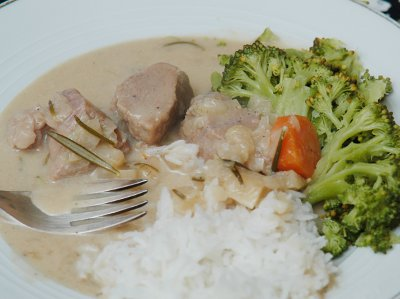

| Zutaten für 4 Portionen: | |
| 750 g | Kalbsbrust |
| 2 | Zwiebeln |
| 2 El | Öl |
| 50 g | Butter |
| 2 dl | Kalbsfond |
| Salz, Pfeffer | |
| 1 El | Paprikapulver |
| 1/2 EL oder |
fein gehackter Thymian |
| 1 El | getrockneter Thymian |
| 1 | Loorbeerblatt |
| 1 Zweig | Rosmarin |
| 6 | Wacholderbeeren |
| 1 El | Senf |
| 1 | Karotte |
| 1/2 | Sellerieknolle |
| 1 Flasche | Kirschenbier |
| 1 El | Honig |
| 1 El | Brauner Zucker |
| 1 dl | Rahm |
| 1 El | Mehl |
Kalbsbrust in Würfel schneiden. Zwiebel fein hacken.
Öl erhitzen und Fleisch anbraten.
Zwiebeln zugeben und dünsten bis sie leicht braun werden.
Fond erhitzen. Mit Salz und Pfeffer würzen. Kräuter und Senf zugeben.
Karotte schälen und in Räder schneiden.
Sellerie in kleine Würfel schneiden und mit der Karotte zum Fond geben.
Bier dazu leeren und mit aufgesetztem Deckel 45 Minuten rösten.
Mehl mit Honig, Zucker und Rahm vermischen und in den Eintopf geben. Auf kleinem Feuer binden lassen..
Mit Salzkartoffeln und grünen Bohnen servieren.
Variationen: Mit einer anderen Sorte Bier ausprobieren.
Broschüre der ESA
Hat am 7.3.2009 ausgezeichnet geschmeckt. Die Kalbsschulter wurde sehr sehr zart. Die Sauce schien zu dünn war dann aber schlussendlich sehr schön sämig. RE
@LINKBACK_TAG@ @WAKELOCK@